GEM-Selektor version 2-PSI
GEM-Selektor version 2-PSI
SCREENSHOT GALLERY
TUTORIAL
Previous Page
Back to Start Page
(40) Using "Process
Simulator" to plot speciation and solubility diagrams
Calculation of speciation and
solubility diagrams is a popular tool in aquatic (geo)chemistry to
evaluate and depict how a dissolved chemical element is distriibuted
between aqueous ions and complexes depending on presence or absence of
its solid and on an argument such as pH. Simple solubilty diagrams can
be plotted by hand by considering complex formation reactions and mass
balance, as described in textbooks. Speciation and complex solubility
diagrams require computing.
In this section, we will consider plotting of an aqueous speciation
diagram for aluminum as function of pH using an "inverse titration"
script in the "Process simulator". Next, we will make a gibbsite Al(OH)3
solubility diagram in this way. Finally, we will produce solubulity
diagrams for kaolinite (Al2Si2O5(OH)4)
-water and kaolinite-water-amorphous silica (SiO2) systems
to illustrate the congruent solubility and the so-called "common ion"
effect or incongruent solubility.
To begin with this exercise, start GEM-Selektor, click on the
"Computation of Equilibria" button, and create a new modelling project,
giving it the name "Kaolinite:Sol-spec-diagrams:". In the "Selection of
Independent Components..." dialog, activate "H", "Al",
"Cl", "Na", "Nit" (atmospheric nitrogen), "Si", "O", and "Zz"
(charge) boxes. Click "Ok" when ready. On the appearing wizard
for setup of mixing models for aqueous and gas phases, check that the
Davies built-in model is selected, and click "Ok" to proceed.
This will
bring you to the "Modelling Project" dialog, where you should first
click on the "Single-System Equilibria" button in order to create a
parent system definition for plotting the Al speciation diagram. Assign
this newly-created system a record key "Kaolinite:G:pHtitrSp:0:0:1:25:0:" (to do calculations at 1 bar 25
C) and click "Ok", then "Ok" on the SysEq configuration dialog if it
appears. You should get now into the "Compos" page of the "System ..."
window.
It is time to set up a start recipe for bulk composition of the system.
Speciation diagrams are normally calculated at the total amount of the
component insufficient for a precipitation of its solid phase(s) in the
whole argument (in this case, pH) range. So, to make sure that no
gibbsite precipitates in the Al-H2O-NaCl system, the total
addition of aluminum must be set on the level of 10-8 mol
per kg H2O or less. Na and Cl are needed because, unlike
LMA, in GEM setup pH (minus decimal logarithm of H+ species
activity) is an output variable and cannot be controlled directly at
the input. The only way to increase the equilibrium pH value is to add
some amount of base (e.g. NaOH). In order to decrease pH, some amount
of acid (e.g., HCl) must be added.
Back to the parent system recipe: in the "Compos" page of the "System"
dialog, enter 1e-8 moles of Al(OH)3, 1000 g of water, 1e-6 mol of HCl,
1e-6 mol of NaOH and 0.1 mol of NaCl to maintain about 0.1 molal ionic
strength, as shown below.
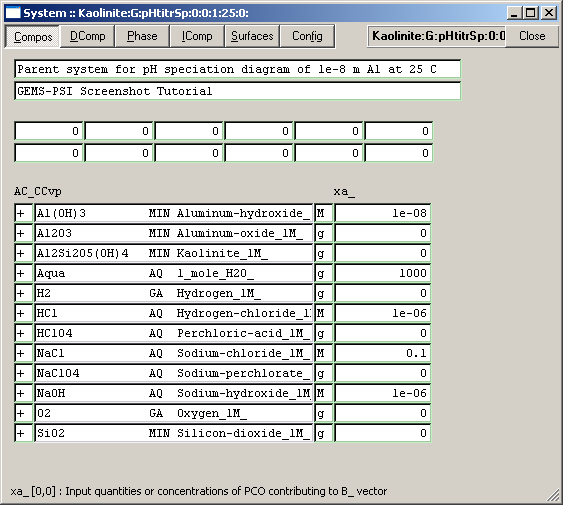
Now, switch to the "Icomp" page and enter there (in the "bi_" column) 1
mol Nit and 0.001 mol O: In GEM calculations, adding some "gaseous"
components like this is beneficial for stabilizing redox state (pe,Eh)
which is also a function of the bulk system composition. Presence of
(dissolved) nitrogen and oxygen gases does not affect aqueous
speciation of aluminum, after all.
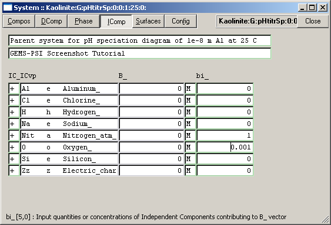
When ready, switch to
the
big "Single Thermodynamic System" dialog and click on the "orange
bottle" (Calculate BCC) toolbar button. You should get a warning dialog
that the independent component "Si" with all its species is about to be
switched off. Press "Ok" to confirm this. Then click on the "GEM"
(cyan ) toolbar button to calculate the equilibrium state, and then
"Accept" to save the results. You should obtain the following (or quite
a similar) speciation screen after expanding all three phases:
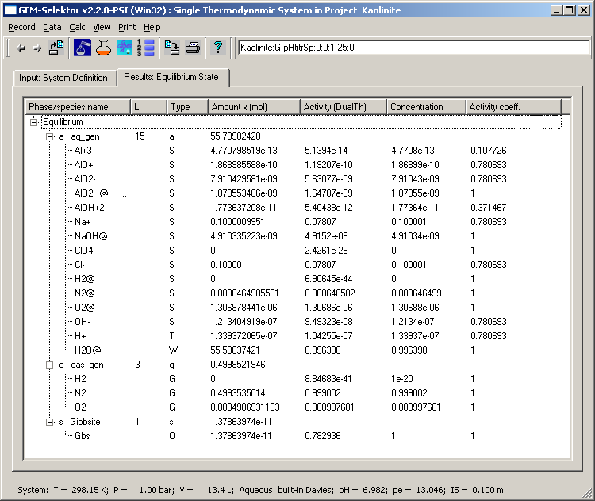
On the above dialog, it is seen that the aqueous solution is slightly
undersaturated with respect to (crystalline) gibbsite.
Now, close the dialog (and the "System" window if it is still open) to
get back to "Modelling Project" dialog, and there click on the
"Process Simulation (Process)" button. In the appearing "Process"
window, select "Record" "Create..." menu command to create a new
process simulator definition record. A dialog requesting to
select a parent system for a new process appears now; mark (with the
left mouse button) the "Kaolinite:G:pHtitrSp:0:0:1:25:0:" record that you have just
created, and click "Ok". In the next (Enter a new key) dialog,
fill out two lowermost fields to obtain a
"Kaolinite:G:pHtitrSp:0:0:1:25:0:pH-spec-Al-1e-8:G" and click "Ok".
Now you are in a "Process Setup" wizard where the process simulator has
to be configured for producing the speciation diagram by an inverse pH
titration sequence. In the "Step 1 ..." page, check "G" item as shown
below:
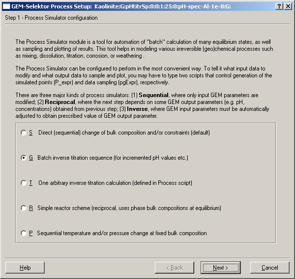
Click "Next >" to
proceed to the next page and set it up as shown on the following
screenshot:
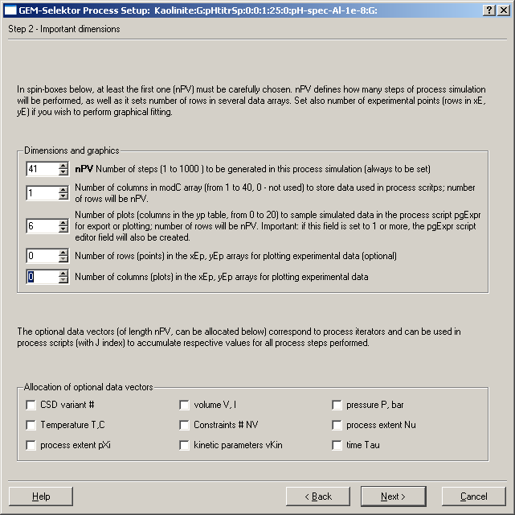
Why nPV = 41 and the number of plots equals 6? Well, this is a matter
of taste, some trial and error, and some experience.
GEMS cannot produce
smooth lines on diagrams - it can only simulate them as a discrete
sequence of equilibrium states. Usually, for pH-based diagrams, 4
points per pH unit (i.e. 0.25 unit increment) are sufficient for
plotting nice diagrams afterwards. The intention to cover 10 pH units
from pH=1 to pH=11 results in 40+1 = 41 points.
The number of plots
(lines on the speciation diagram) - 6 - comes from the desire to plot
concentrations of the Al+3 ion and its 4 hydroxocomplexes
plus the total molality of dissolved aluminum. Finally, we will need 1
column in the modC data object to store the additions of acid/base that
will be found for each of 41 pH points by the inverse titration
procedure.
Click "Next >" to proceed. Check that the next page of the
"Process Setup" wizard looks like given below, and proceed (with "Next
>").
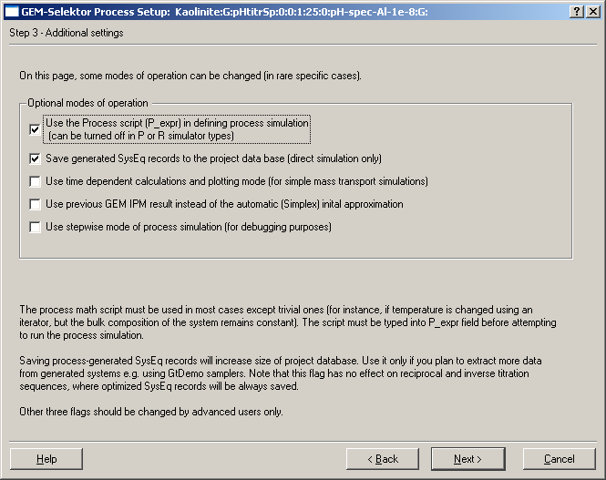
Now, the last wizard page appears; simply click "Finish" to get back to
the "Process" window.
On Page 1, you should see 10 "iterators" - each is a three-cell column
containing a start, an end, and an increment value for a certain
parameter. The first five iterators are used automatically for
generating new SysEq record keys where the equilibria created in the
process execution will be stored. Constant value of the parameter
requires that the start and the end iterator values are equal and the
increment is set toi zero. Some iterators (ipXi, iNu) may have a special meaning when
the process simulator is set up in the inverse titration sequence mode
(as in our present exercise).
Let us start with setting up the ipH iterator that should produce a
sequence of pH points from 1 (ipH[0] until 11 (ipH[1]) with a step of 0.25 (ipH[2]). For each of those 41
equilibria, the inverse titration algorithm will play with the
additions of acid or base to the bulk composition of the system, until
the calculated pH will be equal to the prescribed pH value within a
given tolerance. This tolerance (0.05 pH units) should be set in the iNu[1] cell. This search for the right
addition of the titrant should take place within reasonable limits
which must be set in the ipXi[0] and ipXi[1] cells.
In general, these limits depend on the buffer capacity of the
particular system and must be found by trial equilibria calculations
before setting up the inverse titration process simulator. However, in
this particular case (speciation profile), the system is virtually
unbuffered and we can easily assess that reaching pH=1 requires
addition of at least 0.1 mol of the strong acid. To be on a safe
side, we should start with adding 0.2 mol of HCl because of possible
influence of the activity coefficient of H+ species. A convention used
by the inverse titration routine in GEMS Process simulators is that the
addition of acid is to be coded with negative, and the addition of base
- with positive values. So, enter -0.2 in the ipXi[0] cell. Reaching pH=11 requires the
addition of at least 0.001 mol base (NaOH); it is sufficient to enter
0.002 into the ipXi[1] cell. The ipXi[2] cell should contain a minimum
possible increment of the titrant (set it to 1e-12).
Finally, we need to enter into a P_expr field a special script that
would tell the program what to modify in the recipe of the system
composition in the course of inverse titration. Here is the script:
$ pH sequence of inv. titrations
if ( Next=1) begin
cNu =: cpH-pH; end
if (Next=2) begin
xa_[{NaOH}] =: ((cEh
< 0)? 1e-10: cEh);
xa_[{HCl}] =: ((0-cEh
< 0)? 1e-10: 0-cEh);
modC[J] =: cEh;
$ modC[J]: acid or base added
end
Try to copy/paste the script above to the P_expr field in your running
GEMS Process window (if it does not work with your web browser then
simply retype it). The prototype of such script and details about how
it operates can be found in the math script template collection (use
"Help" "View scripts..." menu command, then select "mscript-titr-invers:0003:proces:" record). Page 1 of the
Process window should finally look like this:
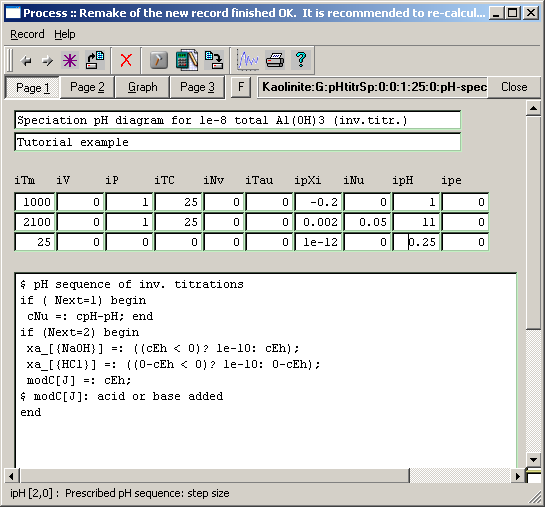
We still have to
provide another script for collecting the calculated data to plot the
speciation diagram. Switch to Page 2 of the Process window. Find
a large pgExpr field and enter there the
following script:
xp[J] =: pH;
yp[J][0] =: lga[{Al+3}] -
0.4343*lnGam[{Al+3}];
yp[J][1] =: lga[{AlOH+2}] -
0.4343*lnGam[{AlOH+2}];
yp[J][2] =: lga[{AlO+}] -
0.4343*lnGam[{AlO+}];
yp[J][3] =: lga[{AlO2H@}] -
0.4343*lnGam[{AlO2H@}];
yp[J][4] =: lga[{AlO2-}] -
0.4343*lnGam[{AlO2-}];
yp[J][5] =: lgm_t[{Al}];
Both scripts will be executed once per process-generated point (indexed
with J), i.e. 41 times. The names in
braces correspond to names of dependent components visible in the large
system or in EqDemo dialog window pages. The results will be stored in xp and yp arrays visible on the "Graph"
page of Process window. This script is just one of several possible
variants to do the job; its advantage is that it can reliably sample
even very low concentrations (between 1e-12 and 1e-22 molal), and it
can easily be converted into activity scale simply by removing the
activity coefficient (lnGam) terms. The second page should finally look
like this:
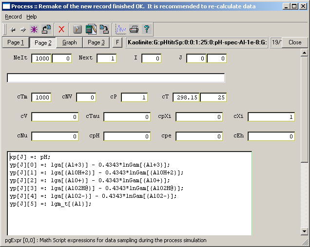
The Process definition is now ready to run. Switch to the "Graph" page
and click on the "Calculate record data" toolbar button. Reply
"Save Changes" to the request to save the Process record to data base
and "No" to a question "Use graphic window?" . The calculation starts
and can take a while, during which the progress dialog should be
visible:
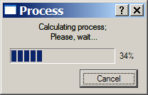
For each of 41 points, the inverse titration routine performs up to 17
calculations of equilibrium - this is why it takes time.
In GEMS versions 2.2.2 or higher, GEM IPM error messages may occur
during process calculation, and it will stop. If this happens, please
check that some "Numerical Settings" are set as follows: Pa_DS = 1e-12;
Pa_DG = 1e-5; Pa_DPV[0] = 150; Pa_DPV[2] = -2; Pa_DF[1] = 0.1; Pa_DK =
1e-4. Save the settings using the "Save record" toolbar button; remake
the process as described above, then run it again.
The process simulation
is finished when you see "Calculation finished Ok." in the status bar
of the Process window. On the "Graph" page, type in the names of axis
and lines as shown below:
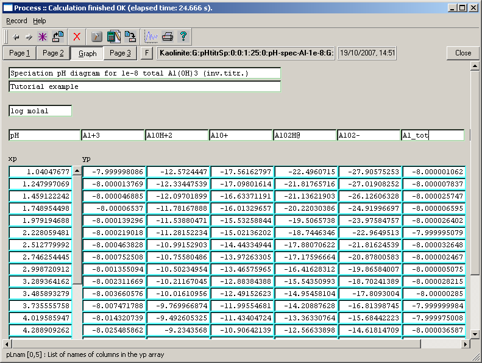
To plot the speciation diagram, click on the "Plot data" toolbar button
and
confirm saving changes to data base. Customise the graph (extent,
color, and size of symbols and lines), drag the plot names from the
legend to the plot. Finally, you should get a diagram similar to that
shown below:
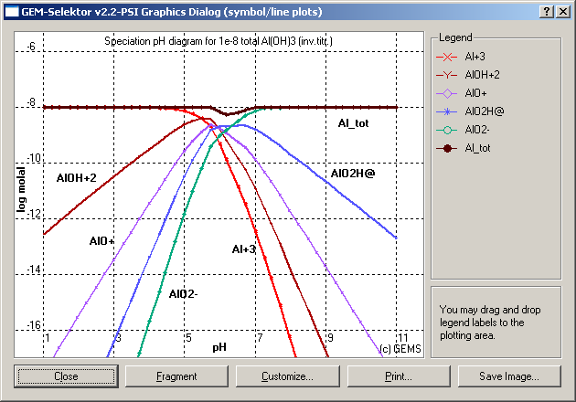
A small pit in the total dissolved Al curve between pH 5 and 7 is due
to the presence of stable crystalline gibbsite. You can also customize
the fragment and then click on the "Fragment"
button to see details in the central part of the diagram:
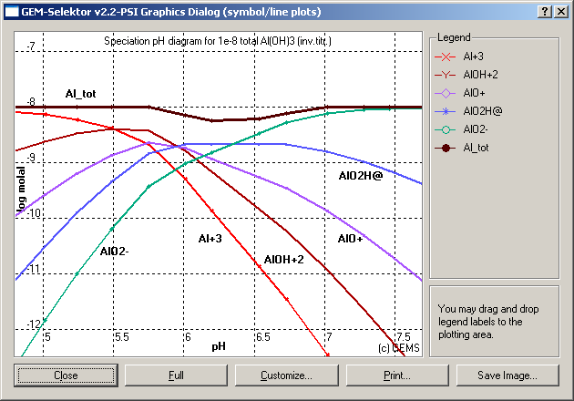
To get a nicer dissolved speciation diagram, without the pit due to the
presence of stable gibbsite phase, you may try (as an exercise) switch
back to the "Single-System
Equilibria" dialog and set there in the recipe a smaller total addition
of Al(OH)3 - e.g. 5e-9 moles. Then re-calculate the parent SysEq
record, save it (by clicking "Accept"), re-calculate the Process
simulator, and re-plot the diagram (not shown here).
From this diagram, one can
deduce that at pH= 6, dissolved aluminum is
represented by three hydroxocomplexes (AlOH+2, Al(OH)2+,
Al(OH)30) present in equal concentrations,
while the Al+3 and Al(OH)4- species
comprise a much smaller part. Close the graph dialog when done.
Converting
an "inverse" into a "forward" Process simulator. Once the
inverse titration pH sequence is performed and nice speciation
plots are produced, the Process record can be cloned and the
calculation of speciation pH profile performed in a "forward modeling"
fashion, ca. 10 to 15 times faster than the inverse titrations. To try
this, first switch to Page 1 of the Process window and find a modC
column on the right side of the process script. This column contains
additions of acid (negative) or base (positive) that produce calculated
pH between 1 and 11 in circa 0.25 unit steps. In principle, these
data can be copied and pasted in another Process simulator for
speciation profiles at low total concentration of the element of
interest which can be run in the usual, "incremental" way. Here,
let us simply clone the present record and change it for doing a
forward calculation of the speciation profile in the same pH interval
and total Al concentration.
Execute the "Record" "New (Clone) ..." menu command, select the same
parent SysEq record "Kaolinite:G:pHtitrSp:0:0:1:25:0:", and click "Ok". In the next
("Enter a new key") dialog,
click on the "From list" button, select the old Process record key, and
change the lowermost field from "G" to "S":
"Kaolinite:G:pHtitrSp:0:0:1:25:0:pH-spec-Al-1e-8:S:" Click "Ok" when done. In
the appearing Process Setup wizard ("Step 1" page), select the
"S" (Direct sequential change...) mode. Click "Next >" and again
"Next >" to reach the "Step 3" page and uncheck there the second box
"Save generated SysEq records to database". Then click "Next >" and
"Finish" to leave the setup wizard. The only remaining thing is to
modify the process script on Page 1 of the Process window, mainly by
deleting some lines. The modified script should take the addition of
titrant from the modC array and put it as an addition
of acid or base to the system's recipe. This is done by the following
script:
$ modC[J]: acid or base added
cEh =: modC[J];
xa_[{NaOH}] =: ((cEh <
0)? 1e-10: cEh);
xa_[{HCl}] =: ((0-cEh <
0)? 1e-10: 0-cEh);
$ end
Now, the contents of ipXi and iNu iterators play no role and can be
cleaned. The Process window page should look like this:
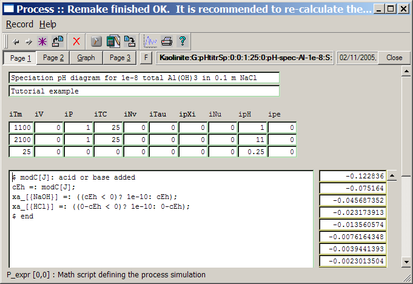
Now, we rare ready to calculate the pH speciation profile again. Click
on the "Calculate..." toolbar button and, later, click "Yes" on the
"Use graphic window" question. The "Graph Dialog" appears now and
bilnks a little bit. Shortly, the whole computation is finished. Close
the graphic dialog and open it again. You should see the same diagram
as before, but computed 15 times faster.
By cloning this Process record again, it is easy to re-plot the
speciation profile in a different scale. For instance, to obtain a
diagram in percentage scale of each aqueous species of aluminum, clone
the Process record under a new key (e.g.,
"Kaolinite:G:pHtitrSp:0:0:1:25:0:pH-proc-Al-1e-8:S:". In the Process Setup wizard, on
Page 2, change the number of plots from 6 to 5 because there is no need
now to plot the total dissolved Al molality. After finisning the
wizard, go to Page 2 of the Process window, and modify the script there
as follows:
xp[J] =: pH;
yp[J][0] =: my[{Al+3}] /
m_t[{Al}] * 100;
yp[J][1] =: my[{AlOH+2}] /
m_t[{Al}] * 100;
yp[J][2] =: my[{AlO+}] /
m_t[{Al}] * 100;
yp[J][3] =: my[{AlO2H@}] /
m_t[{Al}] * 100;
yp[J][4] =: my[{AlO2-}] /
m_t[{Al}] * 100;
yp[J][5] =: yp[J][0] + yp[J][1] + yp[J][2] + yp[J][3] + yp[J][4];
In this very simple script, the molality of each aqueous species of Al
(taken from the 'my' data object) is divided by the
total dissolved molality of Al and multiplied by 100 to obtain
percentages. Alternatively, one could use operators like
yp[J][0] =: x[{Al+3}]
/ b[{Al}] * 100; (i.e.
mole amount of species divided by the total mole amount of Al in the
system bulk composition), but this might not work properly if a
solid Al phase would have precipitated in some of the computed
equilibria.
When done with the script, re-calculate the process
simulator. Plot the graph and customize it by giving the scale for
ordinate (y) from 0 to 100. You should obtain a graph like this:
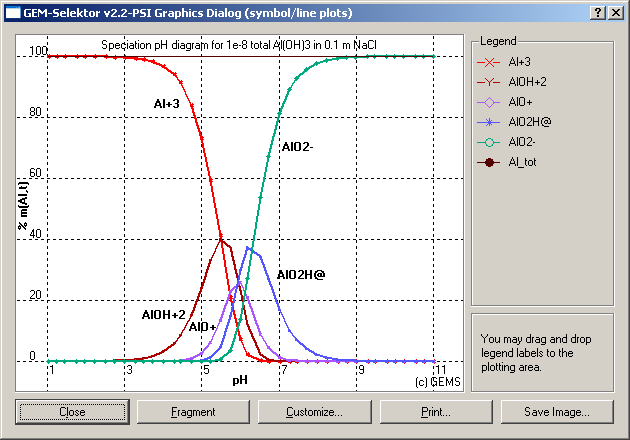
Percent data
look much nicer on cumulative plots. To show this kind of plot, click
on "Customize" and change the plot type in the middle of appearing
"Customize" dialog to "1 - Cumulative", as shown below:
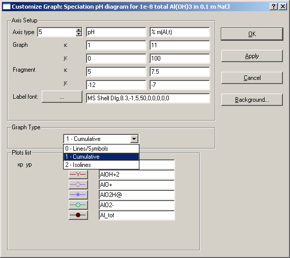
You may see a thick black stripe on top of the plot (above 100%). To
remove the stripe, close the plot, go to the "Graph" page of the
Process window, and find there the last column of the yp array (all
filled with 100). Right-click on the top cell, then select
"Select column (Ctrl-L)" in the menu. The whole column will appear
yellow. Right-click on the same cell again, then select "Edit"
and then "Clear". The column will now be filled with "empty" values.
Plot the graph again to obtain something like shown below.
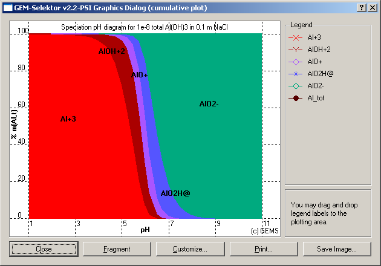
From this cumulative speciation diagram, it becomes clear that the
aluminum ion Al+3 prevails at pH < 5 and Al(OH)4-
complex at pH > 7.
Other three hydroxocomplexes are only important in between and have
about equal percentages at pH=6.
It
may be
desirable to adjust colors for aqueous species to lighter hues,
otherwise the diagram will appear too dark (you may need to customize
colors several times after looking at the plot). Such adjustments are
the matter of taste.
Another popular calculation can be called the solubility/speciation
diagram. The only difference (if compared with the system
considered
before) is that the solid phase (in this case, Gibbsite) must be
present in equilibrium in the whole pH interval. This requires a
different parent system definition.
Switch to the "Modelling Project" dialog and click on the
"Single-system equilibria" button. In the "Single Thermodynamic
System" dialog, check that the SysEq record "Kaolinite:G:pHtitrSp:0:0:1:25:0:" is loaded, and clone from it a
new record "Kaolinite:G:pHtitrSol:1:0:1:25:0:". Open the "System" window
("Compos" page) for setting the recipe of the system and change the
addition of Al(OH)3 to 10 g , recalculate the equilibrium state and
save the results to data base. Now, 0.1282 mol of Gibbsite phase
appears in equilibrium and set pH = 6.979 and total dissolved Al
concentration of 1.147e-8 molal.
Close the "Single
Thermodynamic System" dialog and get back to the Process window. Load
the Process record keyed "Kaolinite:G:pHtitrSp:0:0:1:25:0:pH-spec-Al-1e-8:G:" (the first one created in
this exercise) and clone from it a new Process record. As a parent
system for it, select "Kaolinite:G:pHtitrSol:1:0:1:25:0:" and make the key "Kaolinite:G:pHtitrSol:1:0:1:25:0:pH-sol-Gibbsite:G:" for the new Process record. In the
Process Setup wizard, change the number of points to generate from 41
to 33; go through the rest of the wizard until finish.
Back in the
Process window, change the comment lines. Another place to modify is
the ipXi iterator, the first two fields of which define maximal allowed
additions of acid and base. The dissolving gibbsite buffers
pH of the solution, therefore, set ipXi[0] to -0.6 and ipXi[1] to
0.3. It makes no sense to start at pH = 1 because the solubility
of gibbsite will then be too high. So, change the ipH iterator to start
value 4 and end value 12 (with step 0.25, this gives 33 points).
Finally, change also the iTm iterator as shown below.
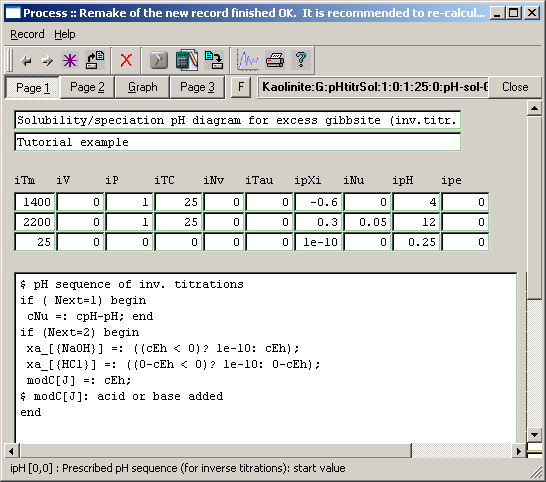
Now, you can run the Process simulator. After it is finished, open the
Graph dialog and customize the graph to obtain what is shown below:
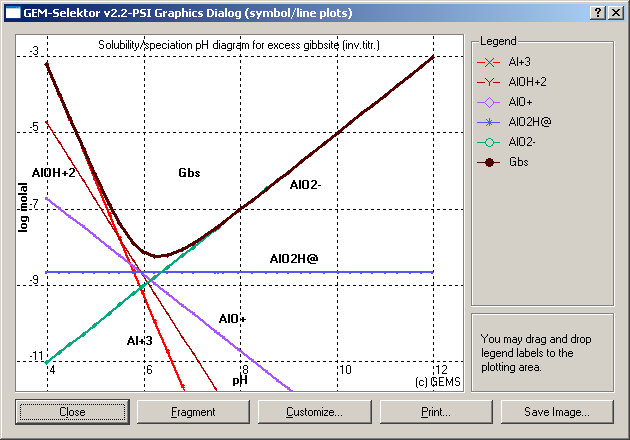
On the above diagram, "Gbs" is just another name for Al_tot - the
total dissolved concentration of aluminum. As the concentrations of
aqueous species are no more limited by the mass balance constraints for
Al, they are all represented by straight lines with the slope which
depends on the species charge. The solubility curve has a minimum at pH
about 6.5 and steeply increases with decreasing pH. The vertical
position of the solubility curve depends on the stability of aluminum
hydroxide modification;
for amorphous Al hydroxide, all curves will be shifted up by about 1
log unit.
A cloned variant of the Process record that performs a "forward" (much
faster) simulation of the above solubility diagram can be obtaned in a
similar way as described above.
Congruent and
incongruent solubility diagrams for kaolinite Al2Si2O5(OH)4
can easily be constructed in the same way as the previous solubility-pH
diagram for gibbsite. It is necessary to create a new "parent" system
and to clone the previous Process record such that it refers to that
new "parent" SysEq record. Next, the script on Page 2 of the Process
window must be extended in order to collect and plot the data for
dissolved silica.
To continue, from the Process window execute "Record" "Display" menu
command and select the
previously created Process record with key "Kaolinite:G:pHtitrSol:1:0:1:25:0:pH-sol-Gibbsite:G:" . Then switch to the "Gibbs Energy
Minimization Modelling Project" dialog and click there on the
"Single-System Equilibria (SysEq)" button. This brings you to the
"Single Thermodynamic System..." dialog with the "parent" system
definition keyed "Kaolinite:G:pHtitrSol:1:0:1:25:0:". We can clone and modify
this system in order to create a new Process Simulator for the
solubility curve of kaolinite.
Clone the system giving it a new record key "Kaolinite:G:pHsolKa:1:0:1:25:0:" and execute "Data" "Bulk
composition ..." menu command to get into the "System" window. First of
all, we have to switch on the Independent Component Si with its
dissolved species and solid phases. Select the "IComp" page and find
there the IC_on column, then switch '-' to '+'
against "Si:e:Silicon_:" key. Next, go to "Phase" page and
in the PC_on column on the left side, turn on ('-' to '+') the Kaolinite and Silica-amorph phases. Leave Quartz and Gibbsite phases
switched off. Next, go to "DComp" page and (in the DC_on column) turn
on the dissolved species AlHSiO3+2, AlSiO4-, HSiO3-, SiO2@,
SiO3-2. Scroll
the column down and check that the Kln Dependent Component of the Kaolinite phase and the Amor-Sl DC are turned on (if not, turn
them on); Quartz and Gibbsite phases
must be turned off.
Finally, go to the "Compos" page and give the following recipe: 30 g Al2Si2O5(OH)4; 1000 g Aqua; 0.1 mol HCl; 0.1 mol NaCl; 1e-6 mol NaOH. Check that the addition of
Al(OH)3 is set to 0. The recipe page
should look like shown here:
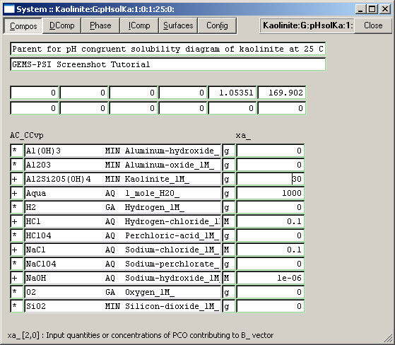
Switch to the "Single Thermodynamic System ..." dialog and click there
on the "orange bottle" toolbar button (or execute "Calc" "BCC" menu
command) to check if everything has been set properly up. If the
program does not complain, calculate the equilibrium state (click
on the button next to the right); otherwise check the system setup and
recipe again.
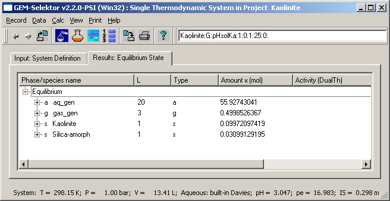
The just calculated equilibrium assemblage does not quite correspond to
congruent dissolution of kaolinite in water because of some amorphous
silica present. This is due to quite high dissolved aluminum (0.033 m) at pH = 3.05 caused by
quite a significant addition of acid (0.1 m). However, we expect that
kaolinite dissolves congruently when total dissolved Al molality is
less than the solubility of amorphous silica (0.002 m), which should be the case in a
large pH interval above 4. This was the reason why we did not include
crystalline quartz phase in the system definition, which would make
this congruence interval very narrow, if present at all.
Now we can proceed with "cloning" the solubility diagram. Go to the
Process window and clone the Process Simulator under the following new
record key: "Kaolinite:G:pHsolKa:1:0:1:25:0:pH-Kaol-cong:G:" . To do this, you have first
to select the "parent" SysEq record just created before. In the Process
wizard, go to Step 2 and set there nPV (number of steps) to 41
(to cover pH interval from 3 to 13) and number of plots to 8 (we need
two more plots for SiO2 and HSiO3- aqueous species). Finish the
wizard and set data on page 1 of the Process window, as shown below.
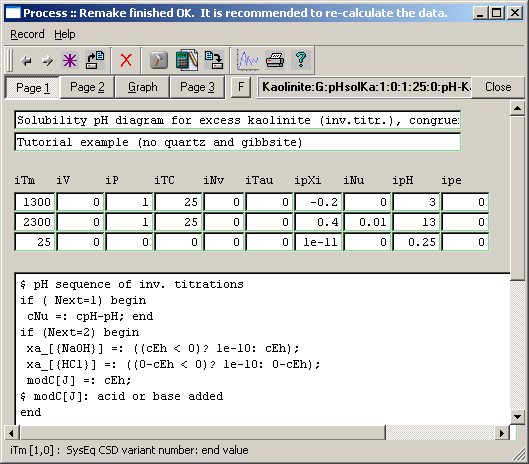
On Page 2, add two following lines at the end of the script:
yp[J][6] =:
lga[{SiO2@}] - 0.4343*lnGam[{SiO2@}];
yp[J][7] =: lga[{HSiO3-}] -
0.4343*lnGam[{HSiO3-}];
These two operators will collect molalities of two main dissolved
species of silica.
When ready, calculate the process simulation. Customize the graph,
which should finally look like this:
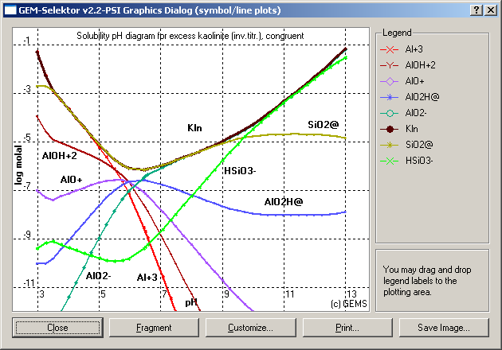
The bends on the left side, at pH <= 3.5, correspond to a small
incongruence region where the amorhous silica phase is stable.
At pH > 3.5, both curves for total dissolved aluminum and silicon
co-inside, i.e. the system is in "congruence" region where kaolinite
has its stoichiometric solubility and no other solids (are allowed to)
precipitate. The minimum dissolved concentrations of Al and Si are
about 1 micromole at pH = 6.5. On the right side of the diagram, it is
seen that the dominant species of Si changes from SiO2@ (at pH < 9) to HSiO3- (at pH > 10). Some slight
curvature on the lines at pH near 13 is due to a significant increase
in the ionic strength by addition of some 0.1 to 0.3 mol NaOH.
The above diagram corresponds to a metastable system because we have
removed Quartz and Gibbsite phases from the definition of chemical
systems. In the presence of these phases, Kaolinite would not be stable
in most pH regions. So, this diagram actually refers to relatively
short reaction times when dissolution of kaolinite occurs but no other
silica and aluminum phases precipitate.
However, even in such system, the solubility curve may dramatically
change at a moderate change in the system bulk composition that makes
kaolinite "dissolution" incongruent in the whole pH interval. Let us
try exploring such case, assuming that there is an excess amorphous
silica present in the system during the whole titration sequence.
Please, come back to the last parent system "Kaolinite:G:pHsolKa:1:0:1:25:0:" and clone it by giving a new record
key "Kaolinite:G:pHsolKaS:1:0:1:25:0:". In the "Compos" page of
the "System" window, add 0.3 g SiO2 to the recipe. Calculate the
equilibrium and save it by clicking "Accept".
Now, go to the Process
window and clone
the Process Simulator under the following new record key: "Kaolinite:G:pHsolKaS:1:0:1:25:0:pH-Kaol-incong:G:" . Do not change anything in
the Process wizard, just go through it and get back to the "Process"
window. You can immediately re-calculate the process simulation.
When finished, open the plot (customize, if necessary):
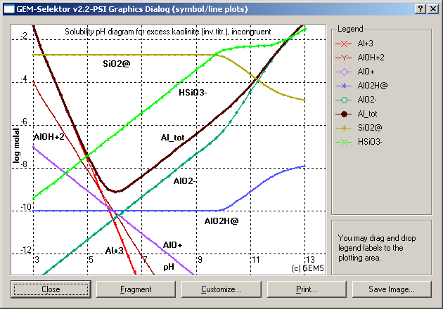
This diagram looks now quite different from the previous one. Total
dissolved concentration and chemical potential of SiO2 are maintained
by the presence of amorphous silica phase. On the whole diagram, there
are only two "congruent" points where total dissolved Si and Al
concentrations are equal and correspond to the Kaolinite stoichiometry:
at pH = 3.5 and pH = 12.3. The latter is also the pH where the
amorphous silica phase disappears. In between, the mass action
determined by the stoichiometry of kaolinite presses the total
dissolved Al deeply down relative to the "congruent" solubility curve -
to 10-9 m at pH = 6.2. This is an order pf magnitude less than the
minimum solubility of gibbsite.
Note that the "Al_tot" curve now is located well above the "AlO2H" and
"AlO2-" curves at pH between 5.5 and 11. This is due to the presence of
Al-Si aqueous complexes which are not shown on the diagram. You can
easily remake the Process record by increasing the number of plots by 2
and adding other two operators to the script on Page 2:
yp[J][8] =:
lga[{AlHSiO3+2}] - 0.4343*lnGam[{AlHSiO3+2}];
yp[J][9] =: lga[{AlSiO4-}] -
0.4343*lnGam[{AlSiO4-}];
After re-running the process simulator, re-plotting and customizing the
graph, the diagram will contain two new strainght lines: one with the
slope -2:1 for the AlHSiO3+2
and another with
the solpe 1:1 for the AlSiO4- species:
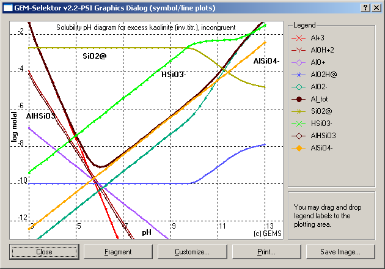
We see that both complexes are not significant for the total dissolved
Si (at least at pH < 11) , but they are significant for Al_tot at 5
< pH < 11.5. The second complex, AlSiO4-, dominates the
dissolved aluminum in the pH interval between 5.7 and 11.
You can explore other
cases, for instance, introducing gibbsite or quartz back into the
system definition. Calculation of solubility diagrams like those
considered in this Tutorial may bring you valuable insights both into
geochemical systems and into palnning dissolution or precipitation
experiments. The diagrams may become even more complex if several
solids, solid solutions, or redox transformations are involved. GEM
calculations comprise the most general and uniform way to explore the
behavior of such aqueous systems.
Next
Page
Back
to main GEMS-PSI page
©
2003-2008 GEMS-PSI Development and
Support Team.